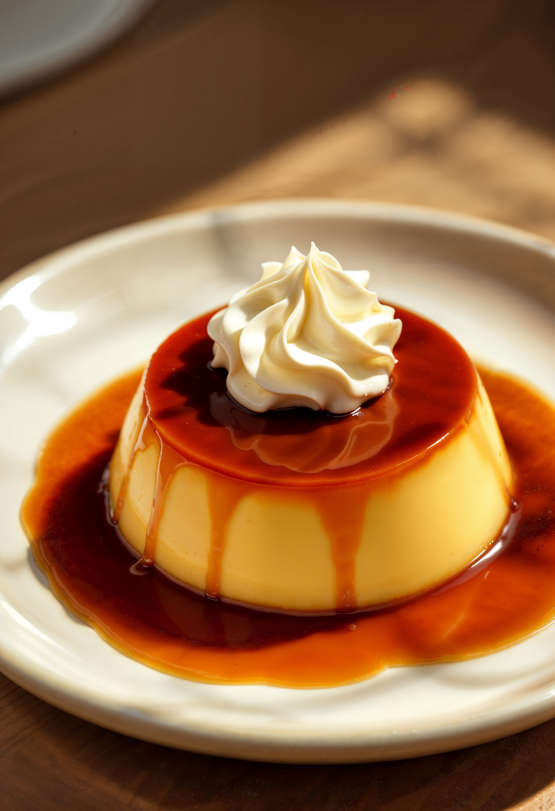

Hoy prepararemos flan casero
Descubre cómo hacer el delicioso flan casero en casa con esta sencilla receta.

Elementos necesarios
Para la preparación del flan
- 6 huevos.
- 500 ml de leche.
- 250gr de azúcar
Para la preparación del caramelo
- 250gr de azúcar.
- 3 cucharadas de agua.
- flan casero (Ver en Cookpad) .
Pasos de preparación
- Batimos huevos y azúcar
- Agregamos la leche y la esencia de vainilla
- Hacemos el caramelo y lo ponemos en el molde que vamos a usar
- Vertemos la mezcla en el molde y tapamos con papel aluminio
- Mandamos a baño María por 45 minutos y una vez que está lo podemos desmoldar en calientes o frío